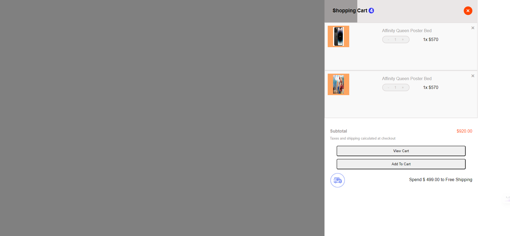
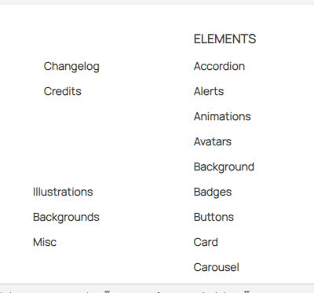

[x] [Bài 1]: Bài làm rất tốt *
Nên căn giữa phần icon và phần nội dung.
Đề xuất.
.project-nav__item {
display: flex;
align-items: center;
gap: 5px;
}
[x] [Bài 2]: Bài làm rất tốt *
[x] [Bài 3]: Bài làm rất tốt *
Thẻ p: tăng line-height line-height: 1.7rem.
Đánh giá chung bài tập về nhà: Bài làm hầu hết đều rất tốt, chỉ cần điều chỉnh một số lỗi nhỏ để hoàn thiện hơn.
[x] [Bài 1]: Bài làm tốt
Nên tăng khoảng cách giữa các icon và phần Nội dung.
Khi hover vào thẻ các class=menu thì mega-menu mới hiện thị.
[x] [Bài 2]:
Ảnh bị méo.
 .
.
Đề Xuất:
.body_item img {
object-fit: contain;
}
Phần .body_item nên thiết kế thanh cuộn lên xuống khi có nhiều sản phẩm để tăng tính trải nghiệm người dùng.
Bị Vỡ Giao Diện.
;
Code Lại bài 2.
[x] [Bài 3]:
Nên Bọc thẻ <div class = "container"> trong thẻ <section> để chia layout cho dễ.
Đề Xuất.
.container {
width: 1135px;
margin: 0 auto;
}
Khi nên để thẻ <button có thuộc tính là position: absolute;.
Các button đang bị chèn lên text, cần kiểm tra và sửa lại cho bài làm chỉnh chu hơn.
 .
.
Đề Xuất.
.item {
display: flex;
flex-direction: column;
align-items: center;
gap: 10px;
}
button {
margin-top: auto;
}
Đánh giá chung bài tập về nhà: Bài làm hầu hết tạm ổn, cần cẩn thận khi nộp bài.
[x] [Bài 1]: Bài làm rất tốt *
[x] [Bài 2]: Bài làm tốt *
Thiếu đường ngăn cách các sản phẩm.
Đề xuất.
.cart-center .product + .cart-center .product {
border-top: 1px solid #f1f1f1;
}
[x] [Bài 3]: Bài làm rất tốt *
Thẻ <p> tăng font-size: 15px.
Thẻ <button> tăng padding: 12px 24px;.
Đánh giá chung bài tập về nhà: Bài làm hầu hết đều rất tốt, chỉ cần điều chỉnh một số lỗi nhỏ để hoàn thiện hơn
[x] [Bài 1]: Bài làm tốt *
Thiếu đường ngăn cách giữa thẻ <div class ="elements-submenu">.

[x] [Bài 2]: Bài làm rất tốt *
Thẻ <ul class="shopping-cart-products"> nên thay giá trị của thuộc tính overflow: auto.
Vì khi các items con có chiều dài và chiều rộng lớn hơn.
Thì mới xuất hiện thanh cuốn ngang hoặc dọc.
[x] [Bài 3]: Bài làm rất tốt *
Thẻ <p> tăng line-height: 1.4rem.
Không lên đặt height cho .service-item vì khi tăng nội dung thẻ <p> nên sẽ bị vỡ giao diện.
 .
.
Đánh giá chung bài tập về nhà: Bài làm hầu hết đều tốt, chỉ cần điều chỉnh một số lỗi nhỏ để hoàn thiện hơn
[x] [Bài 1]: Bài làm rất tốt *
Nên Cần giữa phần icon và phần nội dung.
Đề Xuất.
.menu-nav-item {
display: flex;
align-items: center;
gap: 5px;
}
[x] [Bài 2]: Bài làm tốt *
Thẻ <section class="shopping-cart"> không nên đặt height: 100vh.
Vì khi các phần tử con có height lớn hơn vw sẽ xuất hiện lỗi.
Lỗi.
 .
.
Đề Xuất.
.shopping-cart {
min-height: 100vh;
}
[x] [Bài 3]: Bài làm rất tốt *
Thẻ <p> tăng line-height: 1.4rem
Đánh giá chung bài tập về nhà: Bài làm hầu hết đều tốt, chỉ cần điều chỉnh một số lỗi nhỏ để hoàn thiện hơn
[x] Bài 1:
Bài làm rất tốt *
USAGE đang viết sai chính tả là USEGE.
Độ dày của text trong bài làm đang mỏng hơn so với bản mẫu.
Icon mũi tên ở menu cấp 1 nên đặt kích thước nhỏ hơn.
[x] Bài 2:
Bài làm tốt *
Độ dày tên sản phẩm đang mỏng hơn so với bản mẫu.
Nên xử lý hiển thị tên sản phẩm theo kiểu rút gọn có dấu ... để khi tên sản phẩm quá dài sẽ không bị vỡ layout. Có thể tham khảo đoạn code sau đây:
display: -webkit-box;
-webkit-line-clamp: 3; /*Số dòng muốn hiển thị*/
-webkit-box-orient: vertical;
overflow: hidden; /*Ẩn nội dung vượt quá sẽ bị ẩn đi*/
Nên tuân thủ bản mẫu, ở đây số lượng sản phẩm được hiển thị là 1 chứ không phải 01
Phần text dùng để hiển thị giá đang đậm hơn so với bản mẫu.
Ở sản phẩm thứ 4 phần giá đang bị xuống hàng do độ rộng không đủ để hiển thị trên 1 hàng nên xử lý lại.
Phần transition hover vào button đang không thân thiện với người dùng vì thời gian khi hover vào không thực hiện luôn mà lại delay 0.3s và ngoài ra thời gian thực hiện là 0.5s khá lâu. Không nên để delay ở trường hợp này và điều chỉnh lại thời gian thực hiện tối đa là 0.4s sẽ tốt cho trải nghiệm người dùng hơn.
Phần border của button View Cart đang đậm hơn so với bản mẫu
[x] Bài 3:
Bài làm rất tốt *
Phần transition không nên để delay trong trường hợp này.
Ở đây nội dung trong service-item__desc đang giống hệt nhau nên chắc chắn các button sẽ thẳng hàng nhau nhưng khi nội dung đoạn văn của 1 item ngắn hơn thì sẽ kéo theo button bị lệch so với các hàng khác. Do bản mẫu có item có đoạn mô tả ngắn nhưng các button vẫn thẳng hàng nhau. Bài này chưa xử lý trường hợp đó.
transition và một số lỗi khác để hoàn thiện bài làm hơn.[x] Bài 1:
Bài làm chưa tốt.
Blocks đang viết sai chính tả là Blogks
Phần menu cấp 2 ở mục Documentation bị lệch so với các mục khác.
Xử lý chưa tốt phần menu cấp 2 vì hiện tại không thao tác được với menu cấp 2 do khi di chuyển chuột ra khỏi tên menu cấp 1 bị mất hover nên menu cấp 2 sẽ bị ẩn đi.
Cần sửa lại.
[x] Bài 2:
Bài làm chưa tốt
Không tuân thủ màu như bản mẫu ở nhiều chỗ.
Background của sản phẩm màu đậm hơn so với bản mẫu.
Tên sản phẩm cần đặc biệt lưu ý về cách trình bày tên sản phẩm cho chỉnh chu và theo bản mẫu các chữ cái đầu phải viết hoa.
Xử lý chưa tốt phần border miêu tả số lượng sản phẩm.
Phần giá của từng sản phẩm độ dày đang dày hơn ở bản mẫu.
Độ rộng của layout đang bị rộng hơn so với bản mẫu.
Cart viết sai chính tả đang viết là card.
Khối bao quanh sản phẩm đến hết không nên dùng thẻ form, sai ngữ nghĩa về mặt HTML.
[x] Bài 3:
Bài làm tốt *
Khi sử dụng font-family nên sử dụng font chữ đề phòng ở sau font chữ muốn sử dụng để phòng trường hợp font chữ chính bị lỗi sẽ có font chữ khác dự phòng.
[x] Bài 1:
Bài làm chưa tốt.
Xử lý chưa tốt phần menu cấp 2 vì hiện tại không thao tác được với menu cấp 2 do khi di chuyển chuột ra khỏi tên menu cấp 1 bị mất hover nên menu cấp 2 sẽ bị ẩn đi.
Phần menu cấp 2 làm không chỉnh chu, lệch nhiều so với bản mẫu cần sửa lại.
[x] Bài 2:
Bài làm chưa tốt.
Vì không set height nên sang màn hình to hơn thì khối shopping có chiều cao ngắn hơn so với chiều cao của màn hình to.
Số 4 ở trên chữ Shopping Cart xử lý chưa được tốt, đang bị lệch.
Background của các sản phẩm chưa đúng so với bản mẫu.
Độ dày của phần giá sản phẩm hơi mỏng và kích thước hơi nhỏ so với bản mẫu.
Font chữ của Subtotal, font chữ của 2 button đang không đúng font chữ yêu cầu đề bài.
[x] Bài 3:
Bài làm tốt *
Tổng quan font chữ quá nhỏ, gây khó chịu cho người dùng khi sử dụng web.
Vì đây chỉ là 1 section trong một trang web nên việc sử dụng thẻ h1 cho tiêu đề là không hợp lý.
Việc sử dụng thẻ form bao tất cả section này cũng không đúng về mặt ngữ nghĩa của HTML.
[x] Bài 1:
Bài làm rất tốt *
[x] Bài 2:
Bài làm rất tốt *
Số 4 ở trên tiêu đề Shopping Cart xử lý chưa tốt lắm đang bị lệch.
Chữ thể hiện tên sản phẩm có màu hơi đậm so với bản mẫu.
[x] Bài 3:
Bài làm tốt *
Tiêu đề chính, tiêu đề của các item đang dùng sai font chữ so với yêu cầu đề bài.
[x] Bài 1:
Bài làm rất tốt *
Ở trường hợp này không nên sử dụng transition-delay khi hover vào các item.
[x] Bài 2:
Bài làm rất tốt *
[x] Bài 3:
Bài làm rất tốt *
[x] Bài 1:
Bài làm rất tốt *
[x] Bài 2:
Bài làm rất tốt *
Chữ thể hiện giá sản phẩm đang có độ dày mỏng hơn so với bản mẫu.
[x] Bài 3:
Bài làm rất tốt *
Nộp muộn
[x] Bài 1:
Bài làm tốt
Ở menu cấp 1, mũi tên chỉ xuống nên căn giữa sẽ đẹp hơn.
Ở menu cấp 2, khoảng cách giữa các mục đang hơi thấp nên tổng quan nhìn menu cấp 2 sẽ bị nhiều chữ và không thoáng. Ngoài ra có cột chưa được căn thẳng hàng nhau. Cần chỉnh sửa lại cho đúng với bản mẫu.
[x] Bài 2:
Bài làm tốt.
Chưa có số lượng sản phẩm ở trên tiêu đề Shopping Cart.
Background sản phẩm đang không giống với bản mẫu.
Phần số lượng của từng sản phẩm cụ thể cần tuân thủ theo bản mẫu.
Chữ Spend $ 499.00 to Free Shipping có độ dày mỏng hơn so với bản mẫu.
[x] Bài 3:
Bài làm tốt.
Sai font chữ so với bản mẫu, đây là lỗi cơ bản nhất khi xây dựng layout, cần hết sức chú ý.